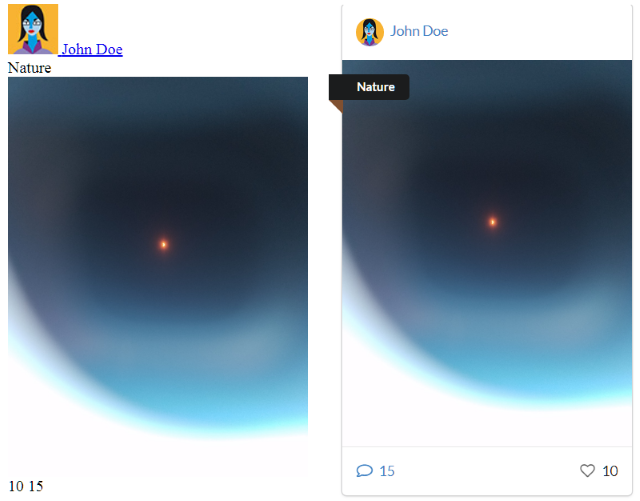
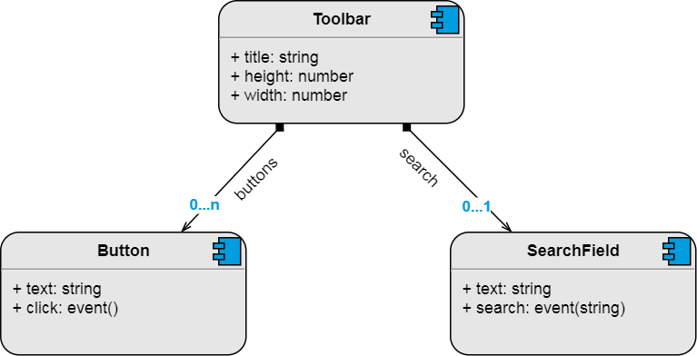
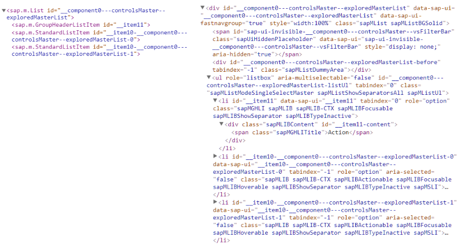

Building apps with JSX for UI5
About me
- Senior IT Consultant @ msg-systems
- Lead dev and architect for a cloud project
- Worked with ABAP, HANA, UI5, SCP
- Really into open source (Spring, Node, React)
- http://serban-petrescu.github.io
Show App
Web Recap
HTML: intermingled structure and data.
CSS: defines how the HTML should look like.
JavaScript: user interaction, communication with the backend, dynamic UI building, etc.
Bare HTML vs With Semantic CSS
UI5 Basics
UI5 is a (archaic) partially open source framework from SAP. It has all the necessary parts for building UIs from scratch.
UI5 applications boil down to a tree of controls. Each control may have several aggregations under which child controls may reside.
Each control has a renderer function or class which is responsible for writing the control's HTML.

UI5 vs HTML
JSX Basics
JSX is a syntax extension for JavaScript popularized by ReactJS.
The power of JSX is that it can be mixed with regular JavaScript expressions.
For example the following JSX expression:
{
["A", "B", "C", "D", "E"].forEach(l => - { l }
)
}
... could potentially create a list with 5 items.
JSX needs to be compiled into regular JavaScript.
For example the following React JSX expression:
const element = (
<h1 className="greeting">Hello, world!</h1>
);
... gets compiled using Babel into:
const element = React.createElement(
'h1', {className: 'greeting'}, 'Hello, world!'
);
Custom Controls
UI5 allows developers to define their own controls, in the same way that standard controls are created by SAP.
Rendering the HTML for a control is a pain in the #$!. It is highly error prone and completely unreadable.
UI5 documentation renderer example:
function(oRm, oControl) {
oRm.write('<div');
oRm.writeControlData(oControl);
oRm.addStyle('width', oControl.getSize());
oRm.addStyle('height', oControl.getSize());
oRm.writeStyles();
oRm.addClass('mySquare');
oRm.writeClasses();
oRm.write('>');
oRm.writeEscaped(oControl.getText());
oRm.write('</div>');
}
Wouldn't it be easier to just write:
function(oRm, oControl) {
var size = oControl.getSize();
oRm.render(
<div class="mySquare" style={ {width: size, height: size} }>
{ oControl.getText() }
</div>
);
}
We can do just that using Babel with a small plugin that I wrote.
Demo: Select
Why JSX?
There is a wide support from tools and frameworks:
- ReactJS (>90k stars)
- VueJS (>90k stars)
- BabelJS (>25k stars)
Can be checked at design time using eslint to prevent frequent mistakes (e.g. forgetting to close a div tag).
Arguably, it has the most flexibility because it can use JavaScript expressions directly.